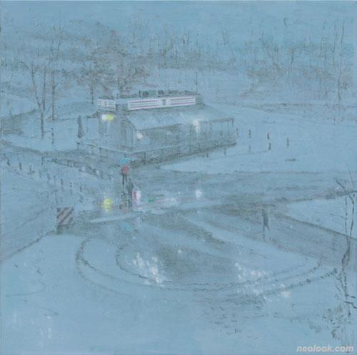
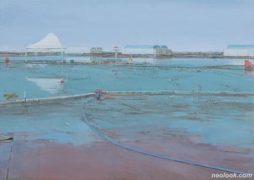

노충현
https://blog.naver.com/rhorin
무엇을
>>풍경과 풍경 속
어떻게
>>작품에서 사람은 풍경 속 가장 멀리 있다. 그리고 실루엣만으로 표현되어 있다.
왜
>>회화는 현실과 가깝고 또 멀다. 사람들은 서로 멀고도 가깝다.
『먼 사람, 사람, 가까운 사람』 속 그와의 거리는 항상 가까워졌다 멀어지기를 반복하며 요동친다.
작가는 얼마나 멀리, 혹은 가까이에서 그 사람을 보고 있는가? 그것을 보는 내 마음 속 그와의 거리는 어떠한가?
우리는 이러한 질문 끝에 도달한 저마다의 '거리'에서 『먼 사람, 사람, 가까운 사람』을 보게 될 것이다.

-노충현_밤눈_캔버스에 유채_91×91cm_2021

-노충현_장마_캔버스에 유채_161×226cm_2021